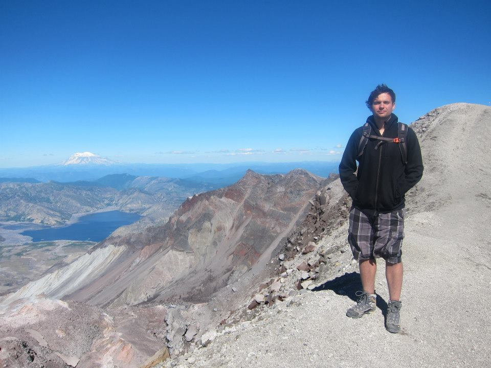

Welcome to the Pre-Major in Astronomy Program (Pre-MAP)! The goal of the Pre-MAP seminar is to give you a chance to do real scientific research while providing the most essential tools necessary to get started. The seminar is the main component of the program, but we also provide continuining resources for your professional development. Additionally, we have events throughout the year to build community between different Pre-MAP cohorts, including the annual Pre-MAP Theodor Jacobsen Observatory (TJO) Open House and a free field trip every spring to somewhere exciting.
Your Instructor (TA)
I'm Eddie Schwieterman, your seminar instructor for this autumn quarter. I am a dual degree PhD student in Astronomy and Astrobiology at the University of Washington. I'm originally from Florida and did my undergraduate research at Florida Tech. I use computer models in order to understand how to characterize exoplanets spectroscopically to determine their habitability and whether their atmospheres contain evidence of biosignatures. You can learn more about me and my research on my home page here. My contact information is listed on the right. Please let me know if you have any questions!

Course Synopsis
The first half of the seminar will consist primarily of developing the basic toolset necessary to begin research in astronomy (and/or astrobiology). This includes computer programming and learning how to decipher scientific writing. The second half of the seminar will be primarily guided research with your mentor and your class partner. There will also be presentations to help with your future professional development. See the schedule page for more information.